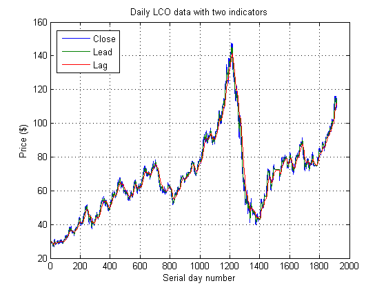
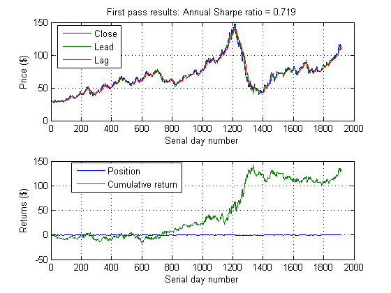

Algorithmic Trading with MATLAB: Preliminary modeling
This demo is an introduction to using MATLAB to develop a simple trading strategy using an exponential moving average.
Copyright 2010-2012, The MathWorks, Inc. All rights reserved.
Contents
Load in some data (Excel)
LCO is Brent Crude blend, one of the most commonly traded oil benchmarks. Here, we load in price information from August 2003 through March 2011.
data = xlsread('brent_1D.xlsx');
LCOClose = data(:,3);
Develop a simple lead/lag technical indicator
We'll use two exponentially weighted moving averages
[Lead, Lag] = movavg(LCOClose, 5, 20,'e'); % We can interactively create the chart we want with MATLAB's plotting % tools, and we can automatically generate code for this cart as well. indicatorChartMA([LCOClose, Lead, Lag])

Develop a preliminary strategy based on the indicator
We will create a simple trading rule based on the moving averages' crossover.
signal = zeros(size(LCOClose)); signal(Lead > Lag) = 1; % Buy (long) signal(Lead < Lag) = -1; % Sell (short) trades = [0; 0; diff(signal(1:end-1))]; % shift trading by 1 period cash = cumsum(-trades.*LCOClose); pandl = [0; signal(1:end-1)].*LCOClose + cash; returns = diff(pandl); annualScaling = sqrt(250); sharpeRatio = annualScaling*sharpe(returns,0); % Annual Sharpe ratio
Again, we can use MATLAB's plotting tools to provide a custom chart providing the information we need.
ruleChartMA([LCOClose, Lead, Lag], [signal, pandl], sharpeRatio)
